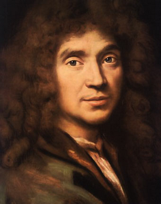

Moliere (1622-1673)

Fransýzlarýn ünlü tiyatro yazarý ve oyuncusudur. Asýl adý Jean Baptiste Poquelin’dir. Moliere’i müstear isim olarak kullanmýþ ve bununla tanýnýp meþhur olmuþtur. Zengin bir ailenin çocuðu ve soylu sýnýfý içinde yetiþmesine raðmen bu kültürle uyuþamamýþ ve tiyatroya ilgi duymuþtur. Kaleme aldýðý komedilerinde, her an karþýlaþýlabilen sokaktaki insan figürlerini kullanmýþ, insanlarýn birbiriyle çeliþen hal ve hareketlerini canlý bir þekilde sahneye taþýmýþtýr. Soylularý eleþtirmekten çekinmemiþ ve bu yüzden de tepkilere maruz kalmýþtýr. Tartuffe adlý eserinde iki yüzlü bir papazý canlandýrdýðý için kilisenin çok sert tepkisini çekmiþ, eseri ancak beþ yýl sonra sahnelenebilmiþtir. Zübeyir Gündüzalp tarafýndan 1947 yýlýnda Ankara Üniversitesi’nde sunulan, Sözler ve Gençlik Rehberi adlý eserlerin sonlarýna ilave edilerek yayýnlanan “Konferans”ta, Kur’an-ý Kerim’in büyük tefsiri olan Risale-i Nur Külliyatý’nýn Moliere gibi yazarlarýn eserlerine gösterilen beðeni ve takdir duygusundan çok daha fazlasýný hak ettiði üzerinde durulmuþtur.Moliere, 1622 yýlýnda zengin bir ailenin çocuðu olarak Paris’te doðdu. Babasý sarayýn mobilya ve döþeme iþlerini yapmaktaydý. Küçük yaþtan itibaren iyi bir eðitim gördü. Ýlk öðrenimini tamamladýktan sonra Cizvit papazlarýnýn yönetiminde olan Clermont Koleji’ne girdi. Burada klasik eðitim gördü. Yunanca ve Latince’yi öðrenerek eski Roma kültürü hakkýnda önemli bir birikime sahip oldu. Descartes’ýn muhalifi olan Grassendi’den de felsefe derslerini aldý. Aldýðý eðitim ve soylu sýnýfýnýn ahlak anlayýþýna uymayýp, oyunculuðu ve eleþtirmenliðiyle kendini kabul ettirmeðe çalýþarak, tiyatroyla ilgilenmeye baþladý.
Moliere, Hukuk Fakültesine girdiyse de bu alana fazla ilgi duymadýðýndan eðitimini tamamlamadan okuldan ayrýldý. Bir oyuncular topluluðu oluþturarak bu topluluðun yöneticiliðini üstlendi (1643). Sahnede asýl ismi yerine Moliere müstear ismini kullandý. Ancak, baþarýlý olamadý. Paris’e yerleþen gurup burada tutunamadý. Tiyatrosu kapanýp iflas edince borcu yüzünden hapse girdi.
Paris’te topluluðuyla tutunamayan ve borcu yüzünden bir süre hapis yatan Moliere, iki yýl aradan sonra tiyatro gurubuyla Fransa turuna çýktý. On iki yýl boyunca taþrada dolaþtýðý bölgelerde hem yazýp, hem oynadý. Bu kez baþarýlý da oldu. Çünkü, sadece belli bir sosyokültere sahip kesime hitap etmekten öte, daha geniþ kitlelere hitap etmeyi, sokaktaki insaný canlandýrmayý tercih etti. Her zaman karþýlaþýlabilir tiplemeler ve kolay anlaþýlýr mesajlar içeren oyunlara yer verdi. Uzun bir aradan sonra Paris’e geri döndü (1658).
Paris’e topluluðu ile birlikte yerleþen ve “Kralýn Kardeþleri Topluluðu” adýyla çalýþmalarýný devam ettiren Moliere, saraya girme fýrsatýný elde etti. Dönemin Fransa kralý olan XV. Louis’nin takdirini kazandýktan sonra himayesinde çalýþmayý sürdürdü. Çok geçmeden Paris’in ünlü tiyatrocularý arasýnda yer aldý. Ardý ardýna yazýp sahnelediði ve çoðu zaman ilkleri teþkil eden oyunlarýyla alanýnda rakipsiz olduðunu gösterdi ve þöhretinin zirvesine ulaþtý.
Moliere, kýsa aralýklarla “Gülünç Kibarlar”, “Ýnsandan Kaçan”, “Kibarlýk Budalasý”, “Bilgiç Kadýnlar”, “Hastalýk Hastasý”nýn aralarýnda bulunduðu otuz iki oyun yazdý. Eserlerini yazarken konu seçiminde Ýtalyan mizah anlayýþýna aðýrlýk verdi. Bu çerçevede sahnelediði Gülünç Kibarlar adlý oyunu büyük bir ilgi gördü. Tiyatro yazarlýðý, yönetmenlik ve oyunculuðu bir arada götürmek suretiyle önemli baþarýlara imza attý. Önceleri yazarlýðýnda hayali figürlere yer verirken daha sonra müþahedelerine de dayanarak doðrudan doðruya hayatýn içinden seçtiði karakterlerle komedilerini süsledi.
Moliere, soylulara sataþmaktan korkmadý. Oyunlarýnda belirli kesim ve karakterleri sahneleyerek bunlarýn gülünç ve düþündürücü yönlerini ortaya koymaya çalýþtý. Hal ve hareketlerinde, sözlerinde, düþüncelerinde yapmacýlýða ve kibarlýða yönelen çevre kadýnlarýný, kralýn huzurunda sahnelediði Kocalar Okulu ve Kadýnlar Okulu adlý oyunlarýyla hicvetti. Dolayýsýyla belli çevrelerin sert eleþtirilerine hedef oldu. Oyunlarýnda sýnýf atlama çabasýnda olan, kendi sosyal gurubundan çok yabancý ve üst bir sýnýfý taklit etmeye çalýþan, bu arada komik duruma düþen kiþilikleri iþledi.
Moliere, yazdýðý ve sahnelediði oyunlarýyla muhtelif kesimlerin eleþtirilerine uðradý. Buna raðmen eleþtirilerinden vazgeçmediði gibi tarzýný devam ettirdi. 1664 yýlýnda yazdýðý ve iki yüzlü bir papazý ele aldýðý “Tartuffe” adlý eseriyle kilisenin çok sert tepkisiyle karþýlaþtý. Eseri üzerinde beþ yýl boyunca tartýþmalar cereyan etti. Eser ancak, beþ yýl sonra sahnelenebildi. Yýllarca süren tartýþmalardan sonra 1669 yýlýnda sahnelenen oyun büyük bir ilgi gördüðü gibi üst üste kýrk dört kez sahnelendi. Kilisenin çok sert muhalefetine raðmen oyunun icra edilmesinde kralýn himayesinin çok büyük etkisi oldu.
Kralýn ilgi ve himayesini gören Moliere de buna karþýlýk olarak onun hoþuna gidecek eserler sergiledi. Oyunlarýnda raks, eðlence ve esprilere yer verdi. Þahane Aþýklar ve Kibarlýk Budalasý adlý eserlerini bu amaçla kaleme aldý.
Moliere, son komedi eseri olan Hastalýk Hastasý’ný 1673 yýlýnda kaleme aldý. Oyunun dördünce kez gerçekleþen temsilinde oynarken kalp krizi geçirdi. Birkaç saat sonra da öldü (1673). Hayatta iken tartýþmalara sebep olduðu gibi ölümü de tartýþmalara sebep oldu. Oyunlarýnda iþlediði karakterden dolayý Kilise ile arasý açýldýðýndan cenazesi ortada kaldý. Kralýn müdahalesiyle ancak dört gün sonra kaldýrýlabildi. Tören yapýlmadan gömüldü.
Moliere’in eserlerinde göze çarpan ve öne çýkan özellik; insanlarýn deðiþmeyen yönlerini, anormal hareketlerini, davranýþlarýný, zihniyetlerini, kimi zaman komik ve kimi zaman hüzünlü durumlara dönüþen yönlerini canlý ve bariz bir þekilde tasvir etmesidir. Komedileriyle günlük hayatýn iþleyiþine dikkat çekerek, sorunlara daha duyarlý ve etkin bir þekilde eðilmeye katkýda bulundu.
Risale-i Nur’da Moliere’in ismi, Zübeyir Gündüzalp tarafýndan 1947 yýlýnda Ankara Üniversitesi’nde sunulan bir konferans vesilesiyle zikredilmiþtir. Bu konferans metni bilahare Risale-i Nur Külliyatý’ndan Gençlik Rehberi ve Sözler’in sonuna eklenmiþtir. Gündüzalp, üniversitelilere Risale-i Nur hakkýnda bilgi verirken, bu arada geçliðin Ýslam alimleri hakkýndaki bilgi eksikliðinin sebeplerini de irdelemeye çalýþmýþtýr. Batýlý bilim adamlarýnýn Ýslam alimleri ve eserleri hakkýnda çok önemli bilgi birikimine sahip olmalarýna mukabil, Ýslam dünyasýnýn kendi mirasýndan yoksun hale geliþine ve alimlerini, Avrupalý bilim adamlarý aracýlýðýyla öðrenme zaafiyetine dikkat çekmiþtir. Bu baðlamda Gündüzalp, Moliere, Hugo, Goethe gibi ünlülerin eserlerini okuduðumuzu ve eser sahiplerine karþý bir hayranlýk duyduðumuzu belirtmiþ, buna karþýlýk Ýslam rehberi olan Kur’an-ý Hakim’i tefsir eden bir Ýslam dahisine karþý baðlýlýðýn nasýl olmasý gerektiði üzerinde durmuþtur. (Gençlik Rehberi, Sözler Y., Ýstanbul 1985, s. 229).